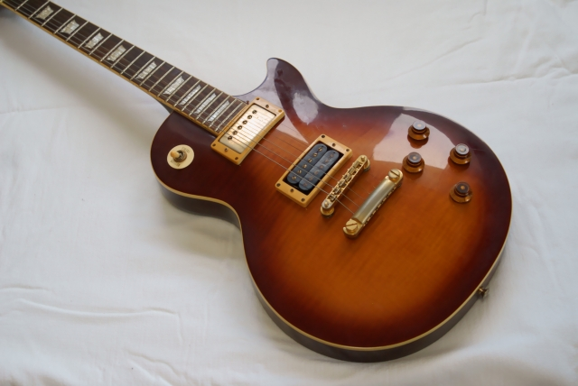
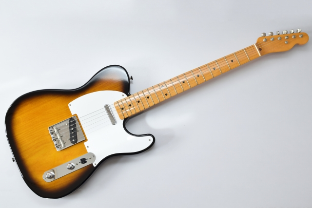

ギター紹介

レスポール
レスポールはギブソン社によって開発されたエレクトリックギターです。特徴的な厚みのあるボディとハムバッカーピックアップが特徴で、ロックミュージックの分野で広く使用されています。
主な特徴:
- ボディ形状: ソリッドボディ
- ピックアップ: ハムバッカー
- ブリッジ: チューンマチック
ストラトキャスター
ストラトキャスターはフェンダー社によって開発されたエレクトリックギターです。シングルコイルピックアップとトレモロブリッジが特徴で、幅広いジャンルの音楽で使用されています。
主な特徴:
- ボディ形状: ソリッドボディ
- ピックアップ: シングルコイル
- ブリッジ: トレモロ

テレキャスター
テレキャスターはフェンダー社によって開発されたエレクトリックギターです。シンプルなデザインとシングルコイルピックアップが特徴で、カントリーやブルースの分野で愛されています。
主な特徴:
- ボディ形状: ソリッドボディ
- ピックアップ: シングルコイル
- ブリッジ: 固定ブリッジ